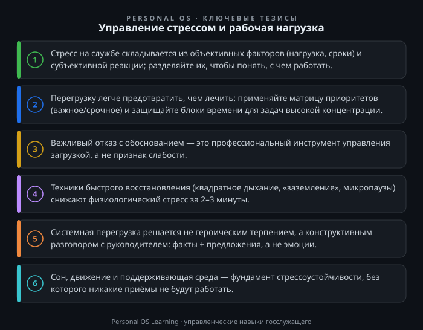

Ни для кого не секрет, что государственная гражданская служба — это работа в условиях высокой неопределённости, жёстких сроков и постоянного контроля. Подготовка ответов на запросы, участие в совещаниях, работа с обращениями граждан, реализация национальных проектов — всё это требует от вас одновременно точности, скорости и эмоциональной устойчивости. Добавьте сюда публичный характер деятельности, необходимость соблюдать ограничения и запреты, установленные законом, — и картина становится ещё сложнее.
Ошибочно было бы считать стресс «чем-то психологическим», что можно игнорировать. Хроническое перенапряжение снижает концентрацию, ухудшает память, провоцирует конфликты с коллегами и гражданами и в конечном счёте ведёт к профессиональному выгоранию. Руководители теряют ценных сотрудников, а сами сотрудники — здоровье и мотивацию. При этом управление стрессом — это не разовая акция, а система навыков, которую можно и нужно осваивать. Данная статья — не теория «позитивного мышления», а практическое руководство: в ней вы найдёте конкретные техники для снижения нагрузки и сохранения устойчивости в условиях служебной деятельности.
Чтобы эффективно управлять стрессом, сначала нужно понять его источники. Общие факторы — сроки, объём работы — есть в любой профессии, но у госслужащего есть и уникальная специфика.
Во-первых, это многообразие задач и их противоречивость. Вы можете одновременно вести проектную документацию, готовить ответы на обращения граждан и участвовать в контрольных мероприятиях. Переключение между разными логиками работы требует серьёзных когнитивных усилий.
Во-вторых, высокая нормативная и репутационная цена ошибки. Любой документ может быть проверен контролирующими органами, прокуратурой, опубликован в СМИ. Страх совершить ошибку создаёт фоновое напряжение.
В-третьих, эмоциональный труд — необходимость сохранять корректность в общении с гражданами, которые часто приходят в тревожном или раздражённом состоянии. Постоянное подавление собственных эмоций — это тоже нагрузка, которую нельзя сбрасывать со счетов.
В-четвёртых, ненормированный служебный день. Для многих должностей закон прямо предусматривает возможность работать за пределами обычной продолжительности служебного времени Федеральный закон «О государственной гражданской службе Российской Федерации». Это означает, что ваш рабочий день не всегда ограничен «с девяти до шести», и именно вы отвечаете за то, чтобы сохранять ресурс.
Наконец, специфический фактор — ощущение «service-стекла»: ответственность есть, а полномочий иногда не хватает. Приходится работать в жёстких рамках, согласовывая решения со множеством инстанций.
Важно отделить объективный стресс (действительно высокая нагрузка) от субъективного (переживание из-за мелочей). Первый требует управления задачами, второй — работы с собственным восприятием. Рассмотрим оба направления.
Рабочая нагрузка может быть здоровой и разрушительной. Здоровая нагрузка — это когда задач много, но у вас есть ресурс, полномочия и понимание приоритетов. Разрушительная нагрузка возникает, когда объём работы превышает ваши возможности, а управленческие механизмы не помогают.
Признаки перегрузки:
Если вы замечаете у себя четыре пункта из пяти — это уже не настрой, а вопрос организации труда. На государственной службе ваша нагрузка во многом определяется должностным регламентом и поручениями руководителя — но это не значит, что вы пассивный объект воздействия.
Первый шаг — честный учёт времени. В течение трёх дней фиксируйте каждую задачу с указанием времени её выполнения: сюда входят совещания, работа с документами, ответы на письма, звонки, «перекуры», листание новостей. Вы удивитесь, сколько времени уходит на несрочные, но шумные дела.
Второй шаг — разделение задач на категории: важные/срочные, важные/несрочные, неважные/срочные, неважные/несрочные (так называемая матрица Эйзенхауэра). Для госслужащего матрица работает следующим образом:
Важнее всего в матрице не сортировка задач, а её следствие: вы осознанно переносите основное время на блок «важные/несрочные» — именно там решается будущее. Но в реальной жизни вас атакуют «срочные/неважные» дела. Поэтому нужен инструмент отказа.
Закон не запрещает госслужащему управлять своим временем. Запрещает лишь халатность и неисполнение поручений. Но между «исполнить» и «согласиться на всё» есть большая разница.
Полезный инструмент — техника «вежливый отказ с обоснованием». Если вам ставят дополнительную задачу, не входящую в должностной регламент, а сроки по текущему поручению не сдвигаются, алгоритм такой:
Это не наглость, а профессиональное управление ожиданиями. Руководитель часто просто не видит, насколько заполнен ваш день. Ваша задача — сделать загрузку видимой и позволить лидеру расставить приоритеты. Если руководитель систематически отвечает «делай всё», имеет смысл использовать официальные механизмы: обсудить нагрузку с непосредственным начальником, а затем предложить оперативно перераспределить задачи в отделе.
Отдельная тема — многозадачность. Миф о том, что можно быстро переключаться между пятью делами, давно опровергнут нейрофизиологами: каждое переключение стоит 3–5 минут когнитивного рассеивания. Работайте блоками: утром до обеда — задачи высокой концентрации (написание документов, аналитика), после обеда — встречи и переписка. Выделите в календаре «защищённые часы» — и это сразу снизит фоновую тревожность.
Стресс возникает не из-за события, а из-за нашей реакции на него — когнитивно-поведенческий подход здесь принципиален. Однако в момент острого напряжения рациональные рассуждения бесполезны: сначала нужно сбить физиологическую реакцию.
Сделайте вдох на 4 счёта, задержите дыхание на 4 счёта, выдох на 4 счёта и паузу на 4 счёта. Повторите 3–4 цикла. Это включает парасимпатическую систему и снижает уровень кортизола в крови в течение 2–3 минут. Выполнимо даже в кабинете во время совещания незаметно для окружающих.
При первых признаках тревоги найдите вокруг себя 5 предметов, которые видите, 4 звука, которые слышите, 3 ощущения в теле (например, стопы на полу), 2 запаха и 1 вкус. Это возвращает вас из будущего (где всё плохо) в настоящее (где всё контролируемо).
Работа в одном и том же положении по 2–3 часа без смены активности — прямой путь к накоплению напряжения. Формируйте привычку вставать и растягиваться каждый час на 1 минуту. Поможет и взгляд вдаль на 20 секунд для снижения зрительного утомления.
Договоритесь с собой о фразе, которую будете произносить мысленно, когда чувствуете, что начинаете раздражаться (например: «Я умею выбирать свою реакцию»). Затем сделайте медленный выдох и перефразируйте негативную мысль в более нейтральную: вместо «Этот гражданин специально меня выводит» — «Он расстроен и говорит это не лично мне».
Хронический стресс — это не результат одного тяжёлого дня, а эффект комфортной «системы» без отдыха. Для госслужащего, особенно с ненормированным служебным днём, особенно важны три опоры.
Опора первая — границы времени. Определите для себя технический момент окончания рабочего дня — например, «в 18:30 я прекращаю проверять рабочую почту». Если на службе принято отвечать на письма вечером, обсудите с коллегами правило «срочные звонки существуют, но почта не требует мгновенного ответа». Это не снижение деловой культуры, а наоборот — забота о качестве решений, потому что вечером вы работаете хуже и тем самым создаёте будущие ошибки.
Опора вторая — сон и движение. Недостаток сна снижает производительность на 20–30%, а нарушение режима напрямую ведёт к раздражительности и проблемам с концентрацией. При этом физическая активность — лучший «сжигатель» кортизола. Не нужно марафонов: 30 минут ходьбы в день в быстром темпе — уже устойчивый антистресс-эффект. Ходите пешком с работы хотя бы в половине случаев — вы получите время для проработки мыслей и снижение уровня гормонов стресса.
Опора третья — поддерживающая среда. По возможности найдите коллег, с которыми можете обсуждать сложные ситуации без страха нарушения служебной этики. Это не «болтовня», а профессиональная супервизия. Если в органе есть психологическая служба — пользуйтесь ею, это анонимно и законно. Обращение за психологической помощью не является дискредитацией госслужащего — наоборот, это признак зрелости.
Если перегрузка становится системной, а ваши личные усилия не приводят к результату, необходимо ставить вопрос перед руководителем. Не жалуйтесь — предлагайте. Лучший формат — короткая служебная записка или пятиминутное обсуждение с такими слайдами:
Такой подход показывает вас как системного профессионала, который управляет процессами, а не просто «жалуется на жизнь».
Для закрепления материала предлагаю выполнить серию коротких упражнений. Каждое займёт 15–30 минут, но результат почувствуете сразу. Возьмите блокнот или подготовьте файл в СЭД вашего органа.
Задание 1. Карта стрессоров
В течение 2–3 рабочих дней фиксируйте в таблице: время, ситуацию, уровень напряжения (по шкале от 1 до 10) и что именно стало триггером (конкретный срок, фраза руководителя, поведение гражданина). В конце недели определите топ-3 повторяющихся источника стресса и по каждому запишите один вариант устранения или снижения. Например: «Совещания без повестки» → «предложить руководителю рассылать план совещания заранее». Вы увидите, что большинство стрессоров можно если не удалить, то уменьшить.
Задание 2. Дневник хронометража
Выберите один рабочий день. Вносите задачи в три колонки: «Начало — конец», «Задача», «Тип: важная/срочная, важная/несрочная, неважная/срочная, неважная/несрочная». В конце дня подсчитайте, сколько времени ушло на важные и несрочные задачи (например, повышение квалификации, подготовка к важному проекту) и на неважные срочные (например, часть переписки). Если доля последних превышает 40%, предложите себе одно правило: например, «первые 30 минут утра — только приоритетная работа, без почты и звонков». По результатам двух таких дней вы поймёте свои личные «пожиратели времени».
Задание 3. Внедрение техники быстрого восстановления
В течение недели практикуйте два приёма. Первый — «квадратное дыхание»: применяйте его каждый раз перед тяжёлым телефонным разговором с гражданином или перед началом сложного совещания. Второй — «защищённый час»: один час в день занимайтесь исключительно приоритетными задачами, отключив уведомления и предупредив коллег. В пятницу запишите в блокноте: насколько снизился уровень напряжения к обеду и удалось ли сдать задачи вовремя. Уже через неделю вы заметите, что вечером остаются силы на личные дела.
Задание 4. Разговор о нагрузке
Подготовьте сценарий разговора с руководителем о перераспределении задач (третье упражнение из раздела о системном решении). Напишите его текст: начните с фактов, приведите не эмоции, а цифры и предложите конкретное решение. Если такой разговор кажется преждевременным — напишите себе черновик докладной записки по единому алгоритму: «факт — следствие — предложение». Вы можете не отправлять её, но сам факт фиксации снизит внутреннее напряжение.
Стресс на государственной службе неизбежен, но его разрушительное влияние — управляемо. Вы не можете отменить жёсткие сроки, проверки и сложных граждан, но способны изменить свою реакцию на них и наладить систему управления рабочей нагрузкой: от приоритизации задач до честного диалога с руководителем.
Начните с малого: определите своих главных стрессоров, освойте две техники саморегуляции и введите один «защищённый час» в день. Это даст эффект в первые же недели: повысится качество документов, снизится вечерняя усталость, вернётся ощущение контроля. Помните: эффективный госслужащий — не тот, кто терпит до границы предела, а тот, кто осознанно бережёт свой ресурс в интересах службы. Управляя собой, вы повышаете управляемость процессов вокруг.

Открыть инфографику в полном размере ↗